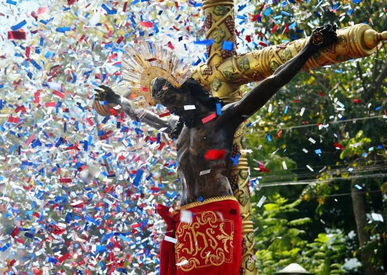

La fiesta en celebración al Cristo Negro de Esquipulas
se celebra el 15 de enero. Es también cuando llega la mayor cantidad de peregrinos a la ciudad provenientes de Guatemala, El Salvador, Honduras y México.
Milagroso Señor de Esquipulas de la Catedral San José de Antigua Guatemala
En enero 11 del 2021 y en plena pandemia del COVID-19, una bellísima réplica
del Cristo de Esquipulas y sus imágenes acompañantes (Virgen Dolorosa, María Magdalena y San Juan Apóstol) fueron donadas a
la Catedral San José de la Antigua Guatemala (ciudad conocida anteriormente como Santiago de los Caballeros de Guatemala y
declarada Patrimonio Cultural de la Humanidad por la Unesco en el año 1979) desatando entre sus seguidores una incontenible y
renovada veneración por el Cristo Negro.
Debido a la gran cantidad de inmigrantes de estos países en Estados Unidos, la fecha del 15 de enero es celebrada también en
ciudades como Los Ángeles, Phoenix, Nueva Jersey y Nueva York.